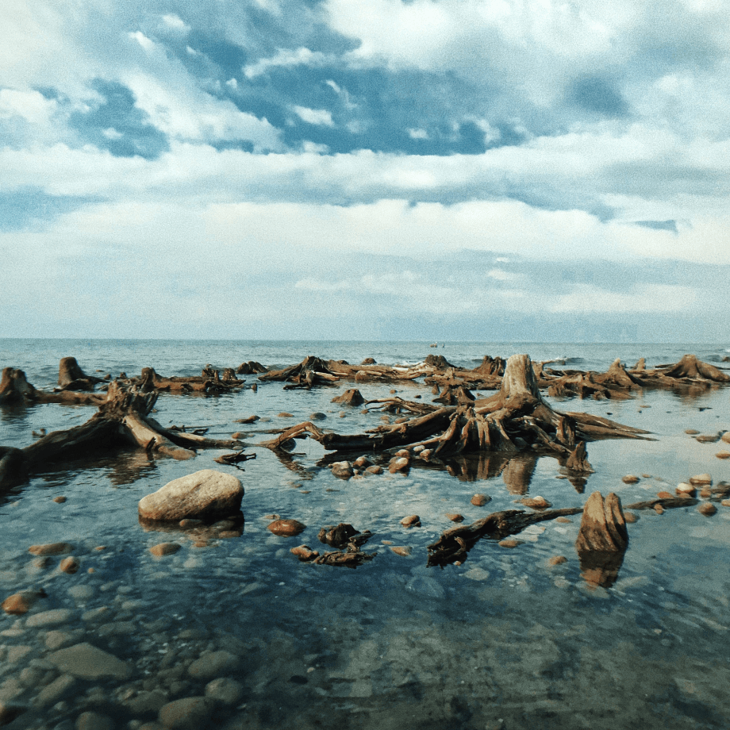
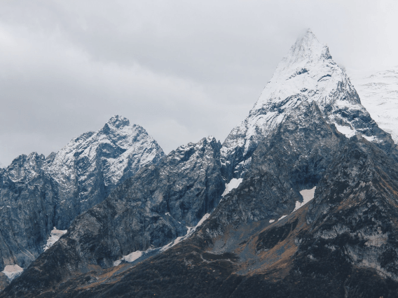
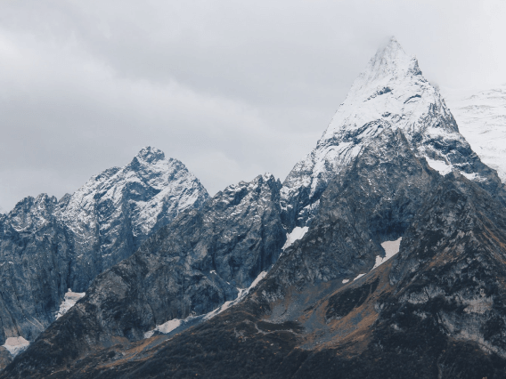
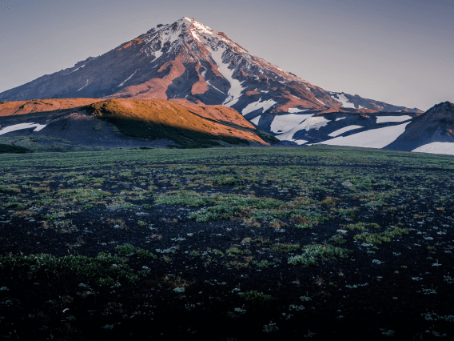
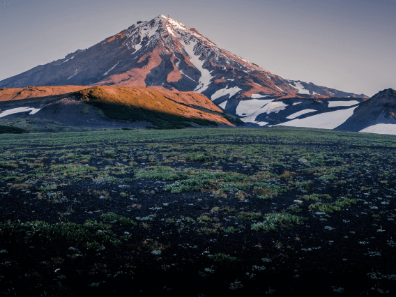

Путешествия по России
Настоящая страна не в выпусках новостей, а здесь.

ваша полка — верхняя
Чего мы там не видели?
По опросам ВЦИОМ, 95% россиян мечтают куда-нибудь поехать, но только 36%
планируют провести отпуск в родной стране. Мол, чего мы тут, дома, не видели? На самом деле,
Россия — это целая вселенная с ласковым морем юга, густыми лесами Саян и суровыми льдами
плато Путорана. А ещё увидеть все эти красоты можно без миллионов на счету, загранпаспорта
и многочасовых перелетов. Как, например, Вера Башмакова — смелая молодая мама, которая взяла
в охапку троих детей, усадила их в свою «Ладу» и проехала 20 тысяч
километров по родной стране. Мы выбрали и описали некоторые интересные места,
достойные вашего отпуска.
- Часовых поясов 11
- Объектов природного наследия ЮНЕСКО 12
- Объектов культурного наследия ЮНЕСКО 16
- Природных заповедников 105
- Аэропортов 241
Куршская коса

Здесь, посреди лесов и песчаных дюн, вы сможете увидеть два водных
горизонта —спокойного Куршского залива с одной стороны и подёрнутого рябью волн Балтийского
моря с другой. Уникальная природная зона на краю российского анклава.
На этом Калининградская область не заканчивается. Для путешественника и
исследователя там же по соседству — самая западная точка России, Балтийская
коса, — и немецкое наследие россыпи небольших приморских городов. Атмосфера здешних мест
исключает суету, окуная в спокойствие природы и запах стального, прохладного моря.
Кольский

Почти весь полуостров находится за Полярным кругом. Саамская тундра,
от которой на юг — тайга, а на север — Ледовитый океан, прикидывающийся
Баренцевым морем.
Возможно, вы смотрели Звягинцева и даже слышали историю арктического
фестиваля в Териберке. Возможно, слово «Хибины» не осталось под снегом школьных
воспоминаний об уроках географии. Возможно, вы не интересовались пронизывающей земную кору
сверхглубокой скважиной, а от апатитов вас давно накрывает апатия. Но ваша мечта увидеть
северное сияние начинает сбываться с билетом в Мурманск.
Алтай

Алтай — одно из красивейших мест в России.
В первую очередь из-за гор: если ехать вдоль хребта, вы увидите склоны, усыпанные соснами, горные
реки и озёра. А если вы откроете в автомобиле окна, сможете познакомиться с невидимым
чудом здешних мест — горным воздухом.
Климат на Алтае умеренный, поэтому ехать сюда лучше всего летом. Так
вы увидите всё разнообразие местной флоры и фауны. По лесам Алтая бродят лоси, над хребтами
летают орлы, а на равнинах пасутся косули. И знаменитые манулы — тоже обитатели
Алтайского края.
Зимний Байкал
Всем известен Байкал как крупнейшее озеро в мире.
Многие также знают, что это самый большой источник пресной воды и одно из красивейших мест
в России.
Конечно, это всё так. Но Байкал ещё идеальное место для соревнований по
скийорингу. Это такой вид спорта, когда лыжник привязывает себя к мотоциклу, и тандем старается
развить как можно бóльшую скорость на льду. В марте 2019 года на фестивале
«Байкальская миля» был поставлен мировой рекорд — 197.011 км/ч.
Карелия

Сибирь заканчивается не на Урале, а в Карелии: образующая
тайгу сибирская лиственница не растёт западнее Водлозера. Зато здесь она вымахивает
на 30 метров — леса карельских национальных парков из-за непроходимых болот никогда
не знали топора. Некоторым соснам уже больше чем полтысячелетия. Прикоснитесь к живому существу,
видевшему солнце раньше, чем увидал его Иван Грозный. В девственном лесу на сотню километров
не встретишь тропы. А на редких тропинках деревья в паре метров от земли помечены
медвежьими когтями. Чтобы все знали, кто тут хозяин.


 


 
